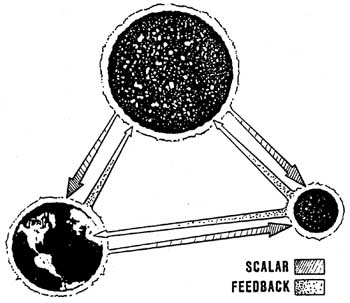

|
excerpted from
 Figure 18. Earth, Sun and Moon are Whittaker-coupled
Mechanisms For Evolution, Gaia, and Morphogenetic Field For all the creatures and species on earth, the Whittaker structured potential mechanism provides the precise physical mechanisms for evolution, and for Sheldrake's morphogenetic field.Every creature continually contributes structures into the quantum potential for its own species, and the quantum potential for every species is part of the overall planetary quantum potential for all its living things. Each species has its own quantum potential, to which every action, movement, thought, or incident of, by, and to its members contributes a minute amount of substructuring. Thus very, very slowly the species bio-quantum-potential adapts from the combined experiences of all its members, and the species "learns." Sudden wholesale changes, of course, can extinguish a species before this mechanism has time to adapt. But if the species has time, it will adapt to even harsh changes inflicted by its environment, and it will change and survive. The species bio-quantum-potential provides the exact mechanism for the species to change, adapt, and evolve to survive the slowly changing adversities of its environment.It should specifically be noted that potentials organize into entire hierarchies of organization. That is, a potential is normally a conglomerate composed of many smaller potentials, each of unique Whittaker structure. The stress of a potential is rather analogous to the pressure in a mixture of gases; the overall pressure of the gaseous mixture is composed of partial pressures of the various gaseous components. Each gaseous component has its own individual contribution to the overall pressure of the entire gaseous mix.In the case of the potential, the overall Whittaker structure of a particular potential is comprised of the overall Whittaker structures of its component potentials. The point is, a quantum potential of one entity is composed of the partial quantum potentials of its component entities. Note that each living cell of a biological organism is itself a complete biological organism. Each cell has its own individual bio-quantum-potential. Insofar as that cell is concerned, its "species" bio-quantum potential (BQP) is the body bio-quantum-potential of the whole animal of which the cell is a part. (Even organs of an animal have their own biopotentials, as does every physical structure and division of everything in the universe. And everything intracommunicates and intercommunicates via hidden EM energy.) Successively deeper Whittaker potentials are nested inside the bio-quantum-potential for the cell, one for each next smaller level of interior structure. The end result is that this cellular hierarchical structure continues directly down into and onto the nucleus of each atom composing that structure. This is the manner in which the life of a living system is attached to, and activates, the physical matter of its body. We have thus specified precisely what the livingspirit of a body is. Communication between all living levels continually occurs via the mechanisms contained in the two Whittaker papers (W-1903: infolding external EM at one level into internal EM at the next lower level; and W-1904: outfolding EM at one internal level to the next outer externalized level). Thus in a true sense, all life on the planet is completely intercommunicative and intracommunicative. Literally, the planet is a living being, and a special kind of Gaia exists. Particularly strong Whittaker-structuring communication occurs between an individual member of a species and its species bio-quantum-potential at fertilization/conception and at death. Thus at cell division (formation of a new cell), mitogenetic radiation is more strongly emitted, showing that increased communication has occurred in a (relatively) impulsive manner. The recorded experience of the body is communicated to the new cell at this time. At the death of the cell, again mitogenetic radiation is more strongly emitted, showing that again impulsive communication has occurred. The recorded experience of the cell듫articularly its most recent experiences드re impulsively transmitted at this time, from the outfolding Whittaker structures of its bio-potential. Similarly, at the fertilization of an egg and the conception of an animal, biocommunication is impulsively exchanged between the newly conceived entity, the body of its mother, and the species bio-quantum-potential. At the death of the individual animal, a relatively impulsive communication again occurs between the cells of the dying body, the dying organism, and the animal's species bio-quantum-potential. Thus it can be seen that the adaptation or evolution of a species is subject to both slow communication components and various impulsive communication components. The development of the bodily form of the members of a species thus can undergo jumps from greater "impulsive discharges" rather than just slow gradual change. That is, obviously a reptile species could not gradually develop a wing by small degrees. Instead, to develop a wing, the wing must appear at once. This can occur under heavy, sustained pressure on the species, stimulating and building a specific phase conjugate portion of the bio-quantum-potential (BQP) of the species. In the ghost forms existing in the vacuum potential, the form for that wing definitely exists, as does the ghost form for anything else that can be imagined. Intercommunication between the atomic nuclei of the living organism and the vacuum potential continually and strongly occurs; there is a violent flux exchange at all times between these nuclei and the vacuum. The external experiences being impulsively communicated back to the atomic nuclei from the species and its members thus continually diffuses on out into the surrounding vacuum potential. The surrounding vacuum potential's Whittaker structuring is continually activated by the Whittaker-structuring of the overall bio-potential of the individual animal. Thus we have specified the specific mechanism for, and the form of, the long-sought "aura'' of the living animal or person. That aura is quite real, and it does exist. Further, knowing what it is, we can now develop instruments to detect and record it, including systems to analyze its contents. Let it be strongly pointed out here that we are talking physics, not mysticism On the other hand, we are most certainly not talking the present rank scientific materialism. To state it in more theological terms, man is truly made in the image of his creator. And the image of the creator is the quantum potential of the vacuum. Further, Man드s is every other living thing created by the Creator들s always and forever in direct but hidden communication with the image of his Creator. It is that image mechanism and its adaptive intervention that is the cause of all evolution. The Creator indeed made man드nd everything else듪ut of the dust of the earth. And indeed he activated his creation with the "breath of life." The new physics does not dispose of God; to the contrary, it marvelously and nondogmatically드nd scientifically�reveals his ubiquitous presence and his ubiquitous hidden intervention. In so doing, the new physics also does away with the present scientific nonsense of dogmatic scientific materialism. We are not robots and machines; we are living souls. Our minds and our beings are not captured in the puny electrical discharges of our brains and nervous system, but in marvelous structures pervading the entire universe, everywhere, everywhen, in the internal Whittaker structure of every point in spacetime. Each has a spirit (that which motivates matter), and that spirit is a form in the Whittaker-structures of all the potentials of the universe. Further, the spirit is eternal. Destruction of the physical body does not alter the fact that the individual spiritual form and its every deed, thought, feeling, and experience exists for all eternity, in every part of the universe, directly in the form and image-potential of God. We indeed are eternal, and our true self is nonmaterial and immortal. The shabby treatment of our present scientific orthodoxy in attempting to deny us our spiritual heritage is refuted, and this refutation is scientifically testable. We challenge the present dogmatism to practice scientific method and put it to legitimate experimental test Spend some money and some time, and do it right. The necessary instruments can be developed. The necessary tests can be performed. The necessary results can be shown. And, given those results, the present materialism must be cast aside as an infantile derangement. It is long past the time when science should put away such juvenile things, and get on with a more mature, adult world. If it does this, then science can contribute to the salvation of Man. If it does not do it, it will continue to contribute to the destruction of Man. We show now the causative mechanism for adaptive evolution. In the gravitons composing the vacuum potential, one photonic element is "time forward'' and one is ''time-reversed.'' These are phase conjugates. Thus, any pattern consistently happening to the species diffuses into the vacuum potential, where its oppositive or "negative feedback" component is automatically selected/created by phase conjugation. The bottom line is this: the external factors causing stress on a species automatically (but slowly) generate a time-reversed response in the activation of the vacuum potential. That is, the species' need-charge generates an activated phase conjugate response-charge, effectively charging up (integrating) the very ghost form or forms in the virtual state of the vacuum that would fulfill that need. As is well-known in physics, a virtual entity can become real and observable if energy is added to it. Thus the species-need is steadily causing just such "addition of energy'' to the virtual state ghost form that answers that need. When sufficient energy has been added (when it has been sufficiently charged/activated), the ghost form starts emerging into the observable state, in the conceptions (via impulsive discharge) taking place in the species. Then species members start being born with that evolutionary change already fully establishedThis is the specific mechanism for evolution of the species. It explains not only slow adaptation, but also impulsive adaptation. It explains why evolution/adaptation occurs in jumps rather than in continuous changes. And it also explains why, in desperate circumstances when sufficient time still is available, rather drastic jumps can occur. |